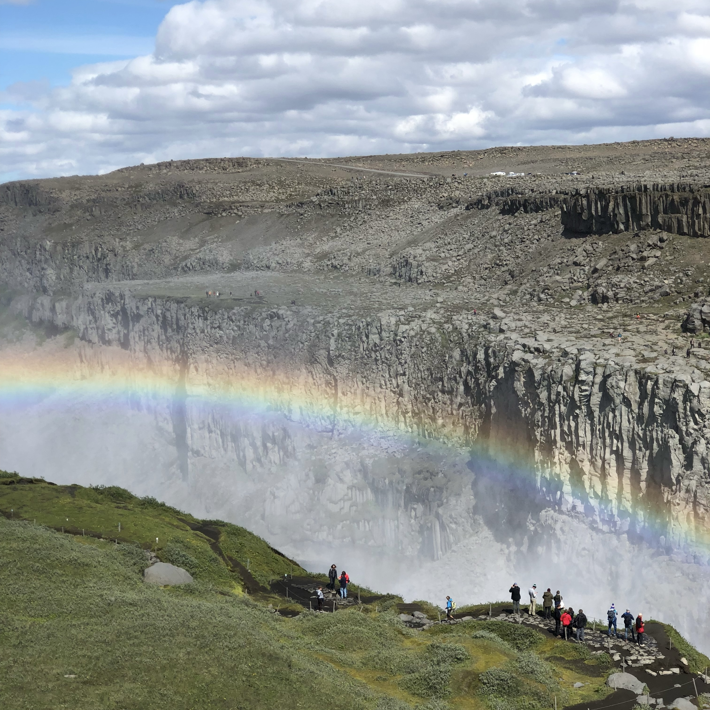

In my other two posts about Korea and Taiwan, I mentioned that one of my favorite things to do when going to another country or city is finding the tallest (or one of the tallest) point(s) of that city, heading up to the top, and taking pictures of the city from above! Although I did that in Iceland, something impressed me even more. And this thing didn't require any high-speed elevators or staircases! Rather, seeing these beautiful waterfalls from the ground looking up, instead of the opposite, was such an incredible experience to have. The Skógafoss waterfall in Iceland is around 200 feet tall and is located around 2 hours outside of Iceland's capital. As our tour took us around the entire island, Skógafoss was of course one of our many stops. Iceland has such an incredible amount of breathtaking waterfalls. Since there are so many, you'd think that after seeing a dozen or so, they would start to seem less impressive or beautiful. However, every single waterfall we saw in Iceland took my breath away, and Skógafoss was no exception!
Iceland: Natural Beauty
| Date | Notable Activities |
|---|---|
| 06/24/18 | Walking tour of Reykjavik, welcome dinner. |
| 06/25/18 | Hellisheðarvirkjun geothermal power station, Gullfoss waterfalls, Geysir tour. |
| 06/26/18 | Whale-watching cruise in Hauganes, bus to Akureyri. |
| 06/27/18 | Akureyri walking tour, Goðafoss waterfall, Lake Mývatn, Dettifoss waterfall, travel to Egilsstadir. |
| 06/28/18 | Egilsstadir tour, travel to Höfn. |
| 06/29/18 | Lake Jökulsárlón, drive through Skaftafell National Park, travel to Vik. |
| 06/30/18 | Travel back to Reykjavik taking the scenic route, Blue Lagoon geothermal spa. |
Skógafoss Waterfall
click link for more info!
Dettifoss Waterfall
click link for more info!
While the previous waterfall, Skógafoss, was no doubt impressive and pretty, it was no doubt much smaller than Dettifoss! Dettifoss, located in the northeastern part of Iceland, falls for around 140 feet and is more than 300 feet wide. This width is crazy, especially compared to Skógafoss which is only around 80 feet in width. Even just walking near Dettifoss, you can hear the insane roar of water gushing over the edge. Getting closer to the waterfall, you might feel a gust of mist as well. One of my favorite moments of the Iceland tour (and probably in my top five of photos in my phone!) was getting to see a rainbow arch over Dettifoss. It was so incredible to see, and although not very rare for Dettifoss, I was nevertheless very privileged to see it.